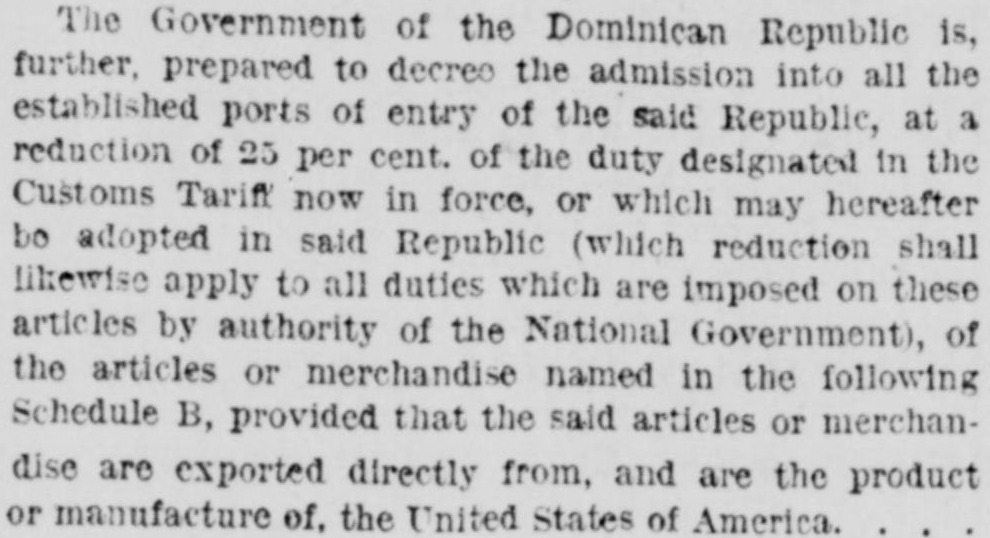
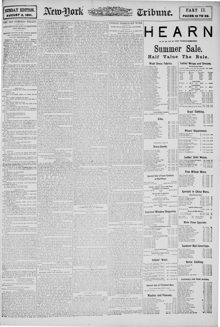

The Government of the Dominican Republic gives the assurance that noEl Gobierno de la República Dominicana da la seguridad de que no
New-York Tribune. New York [N.Y.], August 2, 1891. Page 13. Published by New York Tribune. A daily newspaper, 1866–1924.New-York Tribune. New York [N.Y.], 2 de agosto de 1891. Página 13. Publicado por New York Tribune. Periódico diario, 1866–1924. View the originalVer el original


See the full pageVer la página completaThe New-York Tribune reported on specific assurances given by the Dominican government under the new reciprocity arrangement with the United States. Santo Domingo pledged not to raise export duties on free-list goods, to extend any future export duty reductions to American shipments, and to prevent discriminatory municipal taxes on United States products. The treaty permitted reasonable customs regulations to verify the origin of goods while protecting Dominican revenue without imposing undue restrictions on importers.El New-York Tribune informó sobre las garantías específicas brindadas por el gobierno dominicano bajo el nuevo arreglo de reciprocidad con los Estados Unidos. Santo Domingo se comprometió a no aumentar los aranceles de exportación sobre los artículos de la lista libre, a extender cualquier reducción futura de aranceles de exportación a los envíos estadounidenses y a evitar impuestos municipales discriminatorios sobre los productos de Estados Unidos. El tratado permitía reglamentaciones aduaneras razonables para verificar el origen de las mercancías protegiendo los ingresos fiscales dominicanos, sin imponer restricciones indebidas a los importadores.
FULL TEXT:TEXTO COMPLETO:
The Government of the Dominican Republic is, further, prepared to decree the admission into all the established ports of entry of the said Republic, at a reduction of 25 per cent. of the duty designated in the Customs Tariff now in force, or which may hereafter be adopted in said Republic (which reduction shall likewise apply to all duties which are imposed on these articles by authority of the National Government), of the articles or merchandise named in the following Schedule B, provided that the said articles or merchandise are exported directly from, and are the product or manufacture of, the United States of America.El Gobierno de la República Dominicana está, además, preparado para decretar la admisión en todos los puertos de entrada establecidos de la dicha República, a una reducción del 25 por ciento del derecho designado en el Arancel de Aduanas ahora en vigor, o que pueda adoptarse en adelante en dicha República (cuya reducción se aplicará igualmente a todos los derechos que se impongan sobre estos artículos por autoridad del Gobierno Nacional), de los artículos o mercancías nombrados en la siguiente Lista B, siempre que dichos artículos o mercancías sean exportados directamente desde, y sean el producto o manufactura de, los Estados Unidos de América.
This collection gathers the coverage of the Dominican Republic in the American press, in the order it was published.Esta colección reúne la cobertura de la República Dominicana en la prensa estadounidense, en el orden en que se publicaron.